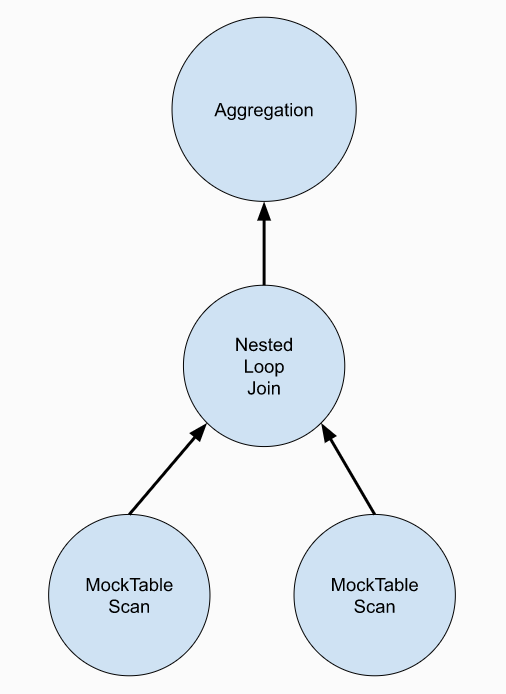

到目前为止，咱们已经完成了存储与索引部分的功能实现，接下来就进入执行层面的内容了。
在 Bustub 框架下，执行层面采用火山模型，又称
Iterator 模型。该计算模型将关系代数中每一种操作抽象为一个
Operator，将整个 SQL 构建成一个 Operator
树，从根节点到叶子结点自上而下地递归调用 Next()
函数，结果就如同流水线一般自底向上返回，并被处理。
这里的结果均用表中的行，或称元组(Tuple)，表示。
Tuple 实际上是虚拟表的一行或一行中某几个连续的单元格按照规定模式组成的集合。
换句话说，上层节点的 Next() 会调用下层节点的
Next() 函数取得一个 Tuple，将其处理后返回给更上层节点。
跟另一种方式（节点一次处理完所有数据后一并返回给上层）相比，增加了吞吐率，但缺点在于增加了函数递归调用的开销。
该 Task 在 code 层面难度并不大，甚至不如 lab1，真正的难度在于熟悉整个框架下数据的排布以及不同数据结构的含义。
课程组已经为我们提供了一部分 Operator 的实现，就先从 Projection 算子开始熟悉一下整个执行层所涉及到的内容。
Sample - ProjectionExcecutor
Projection 算子的构造函数如下
ProjectionExecutor::ProjectionExecutor(ExecutorContext *exec_ctx, const ProjectionPlanNode *plan, std::unique_ptr<AbstractExecutor> &&child_executor):
AbstractExecutor(exec_ctx),
plan_(plan),
child_executor_(std::move(child_executor)) {}ExecutorContext
这是每个算子在构造时都会获得的一个参数，即执行上下文，其包含当前 SQL
语句处理时相应的信息，包含：Transaction，BufferPoolManager，TransactionManager，LockManager
以及 Catalog。
这里最关键的就是
Catalog，下面单独讲。
Catalog
它维护当前数据库的目录信息，包括所有表信息(TableInfo)以及索引信息(IndexInfo)。Bustub
框架下，所有 Table/Index 都有一个唯一标识符 table_oid /
index_oid，以及唯一的表名 table_name / 索引名
index_name，在 Catalog
中，可以通过这些标识符通过自带的 GetTable() /
GetIndex() 函数来检索到信息。
TableInfo
特定 Table 的所有信息，包括：
schema_：表的输出模式，指明 Table 每一列的类型、列名；name_：表名；table_：指向 TableHeap，其实就是表在磁盘上的所有物理页面组成的双向链表；oid：表标识符；
IndexInfo
某一 Table 上特定 Index 的所有信息，包括：
key_schema_：指明在哪些列（Key）上建立的 Index；name_：索引名；index_：指向对应索引的数据结构，这里是之前就实现过的 B+ 树；index_oid_：索引标识符；table_name_：索引所在表名；
PlanNode
当用户输入一句 SQL 查询时，SQL 层会先解析该语句，先生成一棵 AST 抽象语法树，接下来 Plan 层将该 AST 经过 Optimization 层优化后生成一棵 PlanNodeTree，指明该 SQL 语句应该以怎样的顺序从 Table 中获取数据.
下图就是语句
(SELECT * FROM table_1, table_2 WHERE colA = colB) GROUP BY colA;
对应的 PNT：

在火山模型下，执行顺序为顺序扫描->嵌套循环连接->聚合
PNT 上的所有 node 在执行层就对应了不同的 Operator，Operator 接收 Plan 作为参数，就知道自己的工作具体细节是什么。一个 Plan 根据类型不同，可能包含（但不限于）以下信息：
output_schema_：输出模式，规定了传递给上层算子的 Tuple 格式；children_：子节点；expressions_：用于筛选，像上面的ColA = ColB就是一个 Expression。其自身带有一个Evaluate()函数，接受一个 Tuple，并判断其是否满足条件。在 Join 操作中，其也有一个EvaluateJoin函数，适用于xx join xx on (Expression)型的查询；
Projection 执行过程
Projection 操作实际上是语句
SELECT col_name FROM table_name 的具象化，在 PNT 中其接收
SELECT 部分对应算子返回表的所有 Tuple，然后选取 col_name
对应的列，构造新的 Tuple 进行返回。
bool ProjectionExecutor::Next(Tuple *tuple, RID *rid) {
Tuple child_tuple{};
// 从下层算子中获取一条 Tuple
const auto status = child_executor_->Next(&child_tuple, rid);
if (!status) {
return false; // 无法继续输出 Tuple，返回 false 告知上层终止调用
}
// Tuple 本质上是由 Value 数组构成，故需要从 child_tuple 中选取对应 Value 再进行构造
std::vector<Value> values{};
values.reserve(GetOutputSchema().GetColumnCount());
for (const auto &expr : plan_->GetExpressions()) {
values.push_back(expr->Evaluate(&child_tuple, child_executor_->GetOutputSchema()));
}
*tuple = Tuple{values, &GetOutputSchema()};
return true;
}Task #1 - Access Method Executors
诸如上述 Projection 算子，只是对真实表中的 Tuple 副本进行一系列操作，并不涉及磁盘中的 TableHeap。本 Task 需要我们与 TableHeap 打交道，实现 SeqScan，Insert，Delete 这三个算子。
SeqScan
对应 SELECT * FROM table_name 语句，需要获取 TableHeap
并从中读取所有 Tuple。
ExecutorContext 所有算子都是一样的，先来看看 Plan 为我们提供的额外信息：
table_oid_：当需要对 Table 进行读写操作时提供，为 Operator 指明需要操作的 Table，从而通过 Catalog 索引到具体的物理页面；table_name_：同上；filter_predicate_：这是一个 Expression，如果在上述语句中加入WHERE ...，则该值即为对应的运算表达式，用于利用Evaluate()过滤 Tuple；
既然有了 table id，那 TableHeap 就能获取了，通过 Guide
可知，我们需要通过一个叫 TableIterator 的对象来迭代表中
Tuple，并且适当地利用 filter_predicate_
进行过滤，规则为：
若其为
nullptr，则不作过滤，直接返回 Tuple；反之，利用
Evaluate()判断返回值。若为true，则返回 Tuple，反之，跳过当前 Tuple，迭代器继续向前，重复之前的步骤；该函数返回值为
Value类型（底层包括数据类型与值），在过滤条件的判断中，认为其返回 Value 具体类型为bool，故可以通过GetAs<bool>()来获取具体值；
Insert/Delete
下层算子返回需要 Insert/Delete 的 Tuple。
这里分别需要调用 TableHeap 中的 InsertTuple() 和
MarkDelete() 来进行实际的插入和删除。同时，所操作的 Table
可能建有索引，需要对所有建立好的 Index 调用 InsertEntry()
和 DeleteEntry() 操作。
除了对表的操作，Task 还要求我们输出一共操作了多少条
Tuple。很容易想到在算子里定义一个计数器 cnt_，初始化为
0，之后每操作一次便自增一次，直至下层没有 Tuple 输出后再将
cnt_ 包装为 Value(INTEGER, cnt_)，最后构造为
Tuple 进行返回。
但有个测试点显示：如果没有任何操作，需返回
0。也就是说，对于下层不再返回元组的情况，不能简单返回
false，这样会导致 0 的情况不会输出——只有调用结果为
true 才会采用该 Tuple。
考虑到这两个算子实际上是在单次 Next()
调用中就将所有操作完成，后续的调用直接返回
false，也就是说上层最多调用 Insert/Delete 算子的
Next() 两次。那么事情就好办了，我的做法是参考了
TEST-AND-SET 思想：定义了一个 still_need_read
变量，初始化为 true，然后
bool res = still_need_read_;
if (still_need_read_) {
still_need_read_ = false;
}
return res;从而保证首次调用无论是否有操作都必然返回 true。
IndexScan
这个算子需要利用我们在 lab2 中实现的 B+ 树迭代器进行 Tuple
的获取。之前提到所有 leaf node 存的 kv 对中的 Value 都是
RID，故对于在某一列上作的索引，所有 Tuple
在该列上的值作为了 B+ 树的
Key，且根据索引的特性可知，这些值互不相同。
根据 Guide，我们可以通过以下语句来将 Index 对象变为 B+ 树
tree_ = dynamic_cast<BPlusTreeIndexForOneIntegerColumn *>(index_info_->index_.get());这个对象里面有一个函数为
GetBeginIterator()，用以初始化我们的
Iterator。接下来就是不断获取 rid，然后根据 rid 获取 Table 中对应的
Tuple。
Task #2 - Aggregation & Join Executors
Aggregation
跟其余算子的流水线式运作不同，Aggregation 操作可以说是"Pipeline
breaker"——对于一些诸如 max()，sum()
等的聚合函数，它们只能通过扫描全表来进行输出，而不能每取一个 Tuple
就能作出正确的判断。故这里我们的策略转变为：不断获取下层
Tuple，然后完善一个名为 SimpleAggregationHashTable
的对象，直至下层不再返回，此时利用构建好的聚合表，获取我们想要的聚合结果，根据输出模式构造
Tuple 并返回。
相当于是最开始提到的方法 2 了。
Plan 中为我们提供了如下新变量：
group_bys_：依次对应 SQL 语句中GROUP BY (Expression)中的表达式；aggregates_：依次对应 SQL 语句中的待执行聚合函数的列表达式；agg_types_：依次对应所有聚合类型；
同时在 Plan 头文件中还为我们提供了 AggregateKey /
AggregateValue 的类定义。前者就是
group_bys_，后者则是
aggregates_。当然，课程组已经为我们提供了根据 Tuple
构造这两个数据类型的函数，直接调用即可。
SimpleAggregationHashTable
是课程组专门为本算子提供的一个数据结构，可以视为一张常驻内存的哈希表，其底层采用
std::unordered_map 实现。整张表的数据排布如下图所示：
以语句
SELECT MAX(colB), COUNT(colC) FROM table1 GROUP BY colA;为例。
该数据结构的其余 api 都有现成的，同时还有一个
SimpleAggregationHashTable::Iterator
用来遍历表，我们要做的仅仅是完善 CombineAggregateValues()
函数。
该函数会在聚合表的另一个函数 InsertCombine()
中被调用，简单来说就是根据输入的 AggregateValue
去更新聚合表中具体的聚合函数值。生成这些聚合函数值所使用的聚合函数与
agg_types_ 一一对应，所以遍历时需要
for (uint32_t i = 0; i < agg_types_.size(); i++) {
switch(agg_types_[i]) {
// 根据不同聚合类型采用不同方式更新聚合函数值
}
}聚合类型有以下五种：
CountStarAggregate：对应
Count(*)。更新时直接加一。注意 Value 对象有自带的各种运算方法（Add，Min，Max），且参数也为 Value 类型，直接调用即可，注意需接受返回值，并不是真正修改了原值；整数"1"可以通过
ValueFactory::GetIntegerValue(1)来转为 Value 类型。CountAggregate：对应
Count(col_name)。仅当输入项对应的列非空时才加一。Guide Hint 中有提到：Hint: When performing aggregation on an empty table,
CountStarAggregateshould return zero and all other aggregate types should returninteger_null. This is whyGenerateInitialAggregateValueinitializes most aggregate values as NULL.仔细观察
GenerateInitialAggregateValue函数，会发现除了 CountStarAggregate 类型，其余所有聚合函数值都被初始化为了 NULL，而在 Value 类型中，其并非为 0。这就需要在更新聚合函数值时增加函数值当前是否为 NULL 的判断，下同；SumAggregate：对应
sum(col_name)。也是要判断输入项是否非空，并且函数值是否为 NULL；MinAggregate：对应
min(col_name)。同上；MaxAggregate：对应
max(col_name)。同上；
这里有个易错点需要注意，SQL 语句中是否有 GROUP BY
关键字需分情况讨论：
- 无。此时我们的输出 Tuple 只需包含
aggregates_所对应的列即可，并且如果表为空，需生成一个完全初始化的 Tuple，这里需跟 Insert/Delete 一样采用 TEST-AND-SET 的手段； - 有。此时我们的输出 Tuple 不仅要包含
aggregates_列，还需要在前面加上group_bys_列，这里就不需要考虑表是否为空的情况了，直接构造输出 Tuple，并在迭代器到达表 End 时返回false即可；
NestedLoopJoin
嵌套循环连接的朴素思路很简单，对于外表每一个 Tuple，遍历内表中所有
Tuple，进行连接条件判断（即
Expression.EvaluateJoin），若满足条件则构造输出元组。但在火山模型下，每次调用只输出一个
Tuple，这就意味着我们需要保留一些信息，防止下次调用时 Tuple
顺序错乱。
在 Init() 中就把所有输出 Tuple
构造好放到数组里，然后定义一个迭代器逐个输出是可以的，但这样就与火山模型的初衷背道而驰了。想要既能以正确顺序输出
Tuple，又满足流水线模式，就需要在算子内部存储外表
Tuple，并且在合适的时机对外表调用 Next()。
此外，在本 lab 中，NLJ 算子仅支持内连接和左外连接，这两种连接方式有所不同：
- 内连接时，如果外表 Tuple 找不到任何内表满足条件的 Tuple，则直接跳过该 Tuple；
- 左外连接时，如果外表 Tuple 找不到任何内表满足条件的 Tuple，则输出
<outer_tuple, NULL>形式的 Tuple；
故需要一个变量 join_empty 来记录当前外表 Tuple
是否找到了相应内表 Tuple。
代码框架大概长这样：
while (true) {
if (next_) {
if (!outer_executor_->Next(...)) {
return false;
}
next_ = false;
join_empty_ = true;
}
while (inner_executor_->Next()) {
if (plan_->Predicate().EvaluateJoin(...).GetAs<bool>()) {
join_empty_ = false;
// 构造 Tuple
return true;
}
}
next_ = true; // 内表已经无法继续输出 Tuple，更新 next_
inner_executor.Init(); // 需定期初始化内表
if (plan_->GetJoinType() == JoinType::LEFT && join_empty_) {
// 构造空值 Tuple
return true;
}
// INNER JOIN && JOIN EMPTY，需要外表继续 Next()，故外层用 while(true)
}NestedIndexJoin
和 NLJ 思路大体一致，不同之处在于，内表相关的列已经建好了
Index，对于外表中的每一行 Tuple，我们需要利用外表对应的列通过
key_predicate 构建 probe key，从 Index 中获取相应内表的
RID，从而进一步去物理页面中获取 Tuple。
key_predicate 是一个 Expression 变量，利用
Evaluate() 找到传入 Tuple 中建立了索引的列上的
Value，然后再根据 key_schema 模式来构造元组。probe key
的构建大概长这样：
probe_value = plan_->KeyPredicate()->Evaluate(&outer_tuple_, outer_schema_);
probe_key = Tuple({probe_value}, index_info_->index_->GetKeySchema());其余关于何时调用外表 Next() 以及连接类型的讨论同
NLJ。
Task #3 - Sort + Limit Executors and Top-N Optimization
Sort
用于 ORDER BY
关键字，同时还规定了排序类型：ASC /
DeSC。若没有明确表示，则默认为 ASC。
Sort 也是个 Pipeline Breaker，因为其需要等到获取完所有 Tuple
再返回结果。于是乎，需要在算子中定义一个 Tuple 数组，在
Init() 阶段构建好以后，用一个迭代器逐个输出即可。
构建的过程也很简单，不断调用下层算子获取 Tuple 后加入数组，然后调用
std::sort() 并自定义排序方法。对于每个
ORDER BY
对应的列，若相等则比较下一列，否则按照排序类型直接返回 true or
false。由于不会出现完全相同的两行，故自定义排序方法必定能在
for 循环中退出。
// 自定义排序方法
[&](const Tuple &a, const Tuple &b) -> bool {
bool res = false;
for (const auto &orderby : plan_->GetOrderBy()) {
AbstractExpression *expr = orderby.second.get();
// expr->Evaluate 返回的是 Tuple 在对应列下的 Value，利用 Value.Comparexxx 方法进行比较
if (相等) {
continue;
}
if (DESC) {
res = a 的 Value > b 的 Value
} else {
res = a 的 Value < b 的 Value
}
break;
}
return res;
}Limit
这个就更简单了，略。
Top-N Optimization Rule
默认情况下，ORDER BY col_name LIMIT n 会先经过 Sort
算子，再经过 Limit 算子，如果 n << Tuple 数量，则有相当一部分
Tuple 并没有参与到最终的输出，这显然是低效的，因为我们只需要 n
个结果。
Top-N 将以上两个算子融合到一起，它动态维护当前所需的最多 n 条 Tuple，排序方式同 Sort 中讨论的那样。
尽管这也需要下层算子返回所有 Tuple，但优势在于时空的开销——它本质上采用了类似于优先队列的方式，若 Tuple 数量为 N，则原先的 Sort+Limit 的方式需要 \(N\log(N)\) 的时间开销，\(N\) 的空间开销，而 Top-N 时空开销分别只需要 \(N\log(n)\) 与 \(n\)。
与此同时，我们还要实现 Optimizer 中的 sort_limit_as_topn
优化策略，观察其它策略我们发现，都有这样一段代码:
std::vector<AbstractPlanNodeRef> children;
for (const auto &child : plan->GetChildren()) {
children.emplace_back(OptimizeSortLimitAsTopN(child));
}
auto optimized_plan = plan->CloneWithChildren(std::move(children));易得 Bustub 的 Optimizer 采用后序遍历的方法，先优化下层算子，再逐个向上。
需要注意的是 Top-N 优化有严格要求，必须是上层 Limit 下层 Sort 这样的形式才能进行优化。其余部分并不难。
Leaderboard Task (Optional)
Query 1: Where's the Index?
Guide 叽里呱啦讲了一堆，实际上就是让我们实现 Hash Join。思路很简单，构建一个哈希表，内外表在 Hash 函数下映射到同一个 HashKey 的进行 Join 即可。
这里哈希表的数据结构设计其实可以完全照搬 Aggregation 里的那个哈希表。
由于有左连接的设定，我选择用内表 Tuple 在 Init()
阶段构建哈希表，然后再用外表 Tuple 构建
HashJoinKey，到哈希表中进行查找。注意这里 HashJoinValue 应当为一个 Tuple
数组，毕竟内表的多个 Tuple 的 Hash 值可能会是相等的。
此外，为了按序输出以及流水线运作，还需要在 HashJoinValue
中额外定义一个 index_ 变量，表明当前 Next()
进行到哪一步了，这次应该挑选数组中哪一个 Tuple。在 index_
到达数组末尾后，外表才调用 Next()，并且 index_
需要初始化为 0——防止后续外表 Tuple 继续 Hash 到这个 HashJoinKey 上。
关于左连接的特殊情况讨论同上。
Query 2: Too Many Joins!
Query 3: The Mad Data Scientist
这两个时间原因没做，之后再更新。
总结
火山模型的执行过程还是挺有意思的，整体实现起来也不难，更令人感到友好的是 Bustub 直接提供了所有 test sample，可以直接在本地运行并 debug，不需要到 GradeScope 上等了。